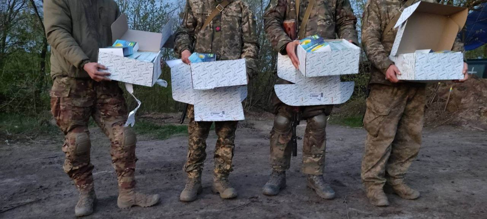
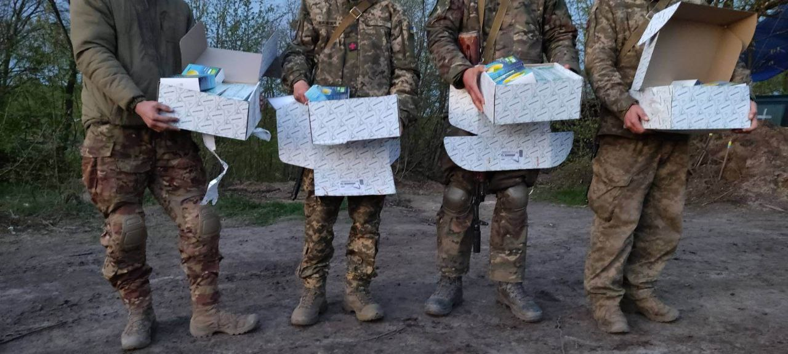

Опис нашої команії:
З 2014 року Олександ Мальцев як приватна особа займався волонтерською допомогою українській армії та переселенцям с Донецкої та Луганскої областей. У 2020 році він разом з командою cтворив благодійний фонд для надання допомоги людям з інвалідністю, хворим дітям та тваринам.
Після початку повномасштабного вторгнення росії, спротив ворогу став основним завданням всієї країни. Тож благодійний фонд сфокусувався на допомозі Силам Оборони України та цивільним, які постраждали від російської агресії. Наразі фонд веде роботу за двома напрямами:
-"Військово-волонтерський штаб" забезпечує бойові підрозділи на передовій засобами зв’язку, оптичними пристроями, дронами, транспортом та засобами тактичної медицини.
-"Гуманітарний штаб" підтримує цивільне населення та надає можливість отримати необхідну допомогу для відновлення гідного життя.
Наш звіт
Команда БФ "НОВИХ ЗМІН" з початком повномасштабного вторгнення стала на оборону м.Одеси. Вдень та вночі патрулювали місто задля безпеки громадян.

Благодійний фонд придбав та передав військовим 2 автомобілі

Силами небайдужих людей було зібрано та передано для наших бійців термобілизну, ковдри, матраци, подушки, мікрохвильові печі та інше приладдя для поліпшення перебування на передовій.


Пошили та зкомплектували 62 бронежелети 4 класу для наших захисників


Для поліпшення сигналу, та можливості прослуховування ворожих переговорів нами було придбано та передано посилювач радіосигналу Motorola


Завдяки нашому партнеру компанії "ІНТЕРХІМ" ми змогли забезпечити наших захисників високоякісними препаратами для підтримки імунітету та боротьби з простудних та вірусними захворюваннями. Наші співвітчизники за кордоном не сиділи склавши руки, звичайні небайдужі люди та Європейські партнери допомогли перев'язочними матеріалами военним госпіталям Миколаївської та Одеської областей.
 

Наш засновник
Мальцев Олександр Павлович
Батько- Курочкін Павло Дмитрович, військовий в званні прапорщика ВПС, в даний час на пенсії. Мати- Курочкіна Валентина Іванівна вчитель російської мови та літератури, в даний час на пенсії. Олександр Павлович закінчив дошкільний навчальний заклад №4 ЯСЛА-САДОК "СОНЕЧКО " в м. Арциз. в 1991 році в віці 7 років Олександр вступив в Арцизький заклад загальної середньої освіти № 4. В шкільні роки займався вуличними танцями «брей-данс», Таеквон-До, боксом, грав у баскетбол. Приймав участь в шкільній самодіяльності, грав у команді КВК. в 2001 році вступив до Харківського національного університету Повітряних Сил імені Івана Кожедуба...
Батько- Курочкін Павло Дмитрович, військовий в званні прапорщика ВПС, в даний час на пенсії. Мати- Курочкіна Валентина Іванівна вчитель російської мови та літератури, в даний час на пенсії. Олександр Павлович закінчив дошкільний навчальний заклад №4 ЯСЛА-САДОК "СОНЕЧКО " в м. Арциз. в 1991 році в віці 7 років Олександр вступив в Арцизький заклад загальної середньої освіти № 4. В шкільні роки займався вуличними танцями «брей-данс», Таеквон-До, боксом, грав у баскетбол. Приймав участь в шкільній самодіяльності, грав у команді КВК. в 2001 році вступив до Харківського національного університету Повітряних Сил імені Івана Кожедуба. В 2006 році здобув вищу освіту за спеціальністю інженера по експлуатаціi та проектуванню лiтаючих засобів. Під час навчання в університеті двічі був нагороджений подякою від Міністра оборони України. Відмінник політичної та бойової підготовки. Переможець змагань зі стрілкової підготовки збройних сил України в Харківській області З 2006 року працював на ЗАТ «Харкiвiнструментпiдшипник» м.Харків, починаючи з рядового слюсара-римонтника, домігся підвищення до Менеджера зі сбуту. Показавши свої професійні навички та цілеспрямованість направлену на результат був запрошений на таку ж посаду на Завод iменi Фрунзе м.Харків, вже на прикінці 2006 році отримав підвищення до Економiста вiддiлу продажу, з 2007 року працював ведучім економістом. В 2008 році звільнився з посади ведучого економіста с Завода iменi Фрунзе, та почав власну справу відкривши СТО (станція технічного обслуговування) «АвтопроТранс» з 2008 року до 2023 року ФОП Мальцев О.П. З 2012-2013 працював заступником директора філії ПП АТП «Транс-ТехСервiс Фаворит» м.Київ. в 2013 році був переведений до філії в м.Харків Директором ПП АТП «Транс-ТехСервiс Фаворит» м.Харкiв. В 2014 Олександр Павлович заснував «Всеукраїнське Таксi 306» в найбільших містах України: м.Харків, м.Київ, м. Одеса, м.Дніпропетровськ, а також у своєму рідному місті Арциз. До 2018 року працював директором власного таксі. В 2019 році заснував ТОВ «ДіНас ГРУПП» В 2020 році заснував «БЛАГОДІЙНИЙ ФОНД Олександра Мальцева «НОВИХ ЗМІН» В 2022 р. Вступив до МГУ (Міжнародний гуманітарний університет) з метою отримання 2-ї вищої освіти на факультет Міжнародних економічних відносин. В 2023 році став лідером Народного руху "Нових змін", який націлений на поліпшення життя українського народу та боротьбу з корумпованою владою. Знання мов: Російська – вільно, Українська – вільно, Англiйська-зi словником Член групи активiстiв з написання та впровадження закону «Про лiцензуванню та оподаткуванню сфери таксi» Волонтер, активiст з 2014 (Розселення біженців в Харківській області, збір і відправлення продуктів харчування в зону АТО) Постійна допомога хворим дітям на території України Постійна допомога ветеранам, пенсіонерам та інвалідам України Член правлiння ОСББ "Альянс 2007" з 2014-2019 р.р. Член правлiння ГБК (гаражно-будівельний кооператив) «Сiрiус Плюс» з 2019 р. Голова екзаменаційної комісії в ПТУ №76 з 2011-2016 р.р. Активний член «Всеукраїнської професійної асоціації підприємців» з 2020 року. З 2020-2023 Директор Благодійної організації "Благодійний фонд "НОВИХ ЗМІН". На початку повномасштабного вторгнення очолював добровольчиц батальйон та з командою патрулював Суворовський район м.Одеси. Під командуванням Олександра будувалися захисні та протитанкові споруди, також батальйон виявляв колоборантів та диверсійні групи. Під час патрулювання перешкоджав розкрадання майна у місцевого населення. Боровся з розкраданням гуманітарної допомоги. Березень-квітень 2022р. Частина добровольців з батальону під командуванням Олександра захищали м.Миколаїв від Російських окупантів. До теперішнього часу допомагає ЗСУ та мирному населенню постраждалому від окупанта. Неодружений, маю двох доньок
+3809331397777
bf.novihzmin@gmail.com